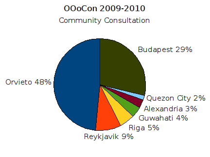

OpenOffice.org Conference
Community Consultation
Eligibility
The Consultation is open to all individuals who were registered as members of the Community on January 1st 2009.
Timetable
The Consultation opens on Friday 13th February and closes at midnight UTC on Friday 27th February.
Process
Note - if you do not intend attending OOoCon this year or next, please do not take part in this process.
- Click on the link below. You will be asked to enter your name and your @openoffice.org email address. We will ignore any submissions from any other email addresses.
- An email will be sent to your @openoffice.org address containing a link. Clicking on the link will take you to the survey system. Note: if you do not receive the email, please check your spam filter!
- When you have made your choices, the system will send you a second email to confirm that your selections have been stored.
Please note: unlike previous years, you cannot change your selections once you have made them, so please do so carefully.
The Results
Please note that voting closed at midnight UTC on Friday 27th February and the results were announced on March 3rd:

So the OpenOffice.org Annual Conference 2009 has been awarded to the team proposing Orvieto, Italy and 2010 to Budapest, Hungary.